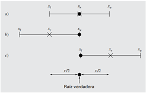

Si \(f(x)\) es real y continúa en el intervalo que va desde \(x_l\) hasta \(x_u\) y \(f(x_l)\) y \(f(x_u)\) tienen signos opuestos, es decir, \(f(x_l )f(x_u )< 0\) Entonces hay al menos una raíz real entre \(x_l\) y \(x_u\). Los métodos de búsqueda incremental aprovechan esta característica localizando un intervalo en el que la función cambie de signo. Entonces, la localización del cambio de signo (y, en consecuencia, de la raíz) se logra con más exactitud al dividir el intervalo en varios subintervalos. Se investiga cada uno de estos subintervalos para encontrar el cambio de signo. El proceso se repite y la aproximación a la raíz mejora cada vez más en la medida que los subintervalos se dividen en intervalos cada vez más pequeños. El método de bisección, conocido también como de corte binario, de partición de intervalos o de Bolzano, es un tipo de búsqueda incremental en el que el intervalo se divide siempre a la mitad. Si la función cambia de signo sobre un intervalo, se evalúa el valor de la función en el punto medio. La posición de la raíz se determina situándola en el punto medio del subintervalo, dentro del cual ocurre un cambio de signo. El proceso se repite hasta obtener una mejor aproximación.
Debemos desarrollar un criterio objetivo para decidir cuándo debe terminar el método. Una sugerencia inicial sería finalizar el cálculo cuando el error verdadero se encuentre por debajo de algún nivel prefijado. Podemos decidir que el método termina cuando se alcance un error más bajo, por ejemplo, al 0.1%. Dicha estrategia es inconveniente, ya que la estimación del error se basaría en el conocimiento del valor verdadero de la raíz de la función. Éste no es el caso de una situación real, ya que no habría motivo para utilizar el método si conocemos la raíz. Por lo tanto, necesitamos estimar el error de forma tal que no se necesite el conocimiento previo de la raíz. Se puede calcular el error relativo porcentual \(ε_a\) de la siguiente manera: $$\epsilon_\alpha \mid \frac{x_{r}^{nuevo}-x_{r}^{anterior}}{x_r^{nuevo}}\mid 100\% $$ Donde \(x_r^{nuevo}\) es la raíz en la iteración actual y \(x_r^{anterior}\) es el valor de la raíz en la iteración anterior. Se utiliza el valor absoluto, ya que por lo general importa sólo la magnitud de \(ε_a\) sin considerar su signo. Cuando \(ε_a\) es menor que un valor previamente fijado \(ε_s\)termina el cálculo. Aunque el error aproximado no proporciona una estimación exacta del error verdadero, la figura sugiere que \(ε_a\) toma la tendencia general descendente de \(ε_t\). Además, la gráfica muestra una característica muy interesante: que \(ε_a\) siempre es mayor que \(ε_t\). Por lo tanto, cuando \(ε_a\) es menor que \(ε_s\) los cálculos se pueden terminar, con la confianza de saber que la raíz es al menos tan exacta como el nivel aceptable predeterminado. Aunque no es conveniente aventurar conclusiones generales a partir de un solo ejemplo, es posible demostrar que \(ε_a\) siempre será mayor que \(ε_t\) en el método de bisección. Esto se debe a que cada vez que se encuentra una aproximación a la raíz cuando se usan bisecciones como \(x_r=\frac{(x_l+x_u)}{2}\) se sabe que la raíz verdadera se halla en algún lugar dentro del intervalo de \(x_r=\frac{(x_u+x_l)}{2}=\frac{∆x}{2}\) .Por lo tanto, la raíz debe situarse dentro de \(±\frac{∆x}{2}\) de la aproximación. Debido a que\(\frac{∆x}{2}=x_r^{nuevo}-x_r^{anterior}\) la ecuación proporciona un límite superior exacto del error verdadero. Para que se rebase este límite, la raíz verdadera tendría que estar fuera del intervalo que la contiene, lo cual, por definición, jamás ocurrirá en el método de bisección. Aunque el método de bisección por lo general es más lento que otros métodos, la claridad del análisis de error ciertamente es un aspecto positivo que puede volverlo atractivo para ciertas aplicaciones. Antes de utilizar el programa para la bisección, debemos observar que las siguientes relaciones.
$$x_r^{nuevo}-x_r^{anterior}= \frac{(x_u+x_l)}{2}$$ $$x_r^{nuevo}=\frac{(x_l+x_u)}{2}$$ Tres formas en que un intervalo puede encerrar a la raíz. En a) el valor verdadero está en el centro del intervalo, mientras que en b) y c) el valor verdadero está cerca de los extremos. Observe que la diferencia entre el valor verdadero y el punto medio del intervalo jamás sobrepasa la longitud media del intervalo, o \(\frac{∆x}{2}\)
Aun cuando la bisección es una técnica perfectamente válida para determinar raíces, su método de aproximación por “fuerza bruta” es relativamente ineficiente. La falsa posición es una alternativa basada en una visualización gráfica. Un inconveniente del método de bisección es que al dividir el intervalo de \(x_l\) a \(x_u\) en intervalos iguales, no se toman en consideración las magnitudes de \(f(x_l)\) y \(f(x_u)\). Por ejemplo, si \(f(x_l)\) está mucho más cercana a cero que \(f(x_u)\), es lógico que la raíz se encuentre más cerca de \(x_l\) que de \(x_u\). Un método alternativo que aprovecha esta visualización gráfica consiste en unir \(f(x_1)\) y \(f(x_u)\) con una línea recta. La intersección de esta línea con el eje de las x representa una mejor aproximación de la raíz. El hecho de que se reemplace la curva por una línea recta da una “falsa posición” de la raíz; de aquí el nombre de método de la falsa posición, o en latín, regula falsi. También se le conoce como método de interpolación lineal. Usando triángulos semejantes, la intersección de la línea recta con el eje de las \(x\) se estima mediante
$$\frac{f(x_l)}{(x_r-x_l )}=\frac{f(x_u)}{(x_r-x_u)}$$ Ésta es la fórmula de la falsa posición. El valor de \(x_r\) calculado con la ecuación, reemplazará, después, a cualquiera de los dos valores iniciales, \(x_l\) o \(x_u\), y da un valor de la función con el mismo signo de \(f(x_r)\). De esta manera, los valores \(x_l\) y \(x_u\) siempre encierran la verdadera raíz. El proceso se repite hasta que la aproximación a la raíz sea adecuada. El algoritmo es idéntico al de la bisección, excepto en que la ecuación se usa en el paso 2. Además, se usa el mismo criterio de terminación para concluir los cálculos.
Recuerde que en el método de bisección el intervalo entre \(x_l\) y \(x_u\) se va haciendo más pequeño durante los cálculos. Por lo tanto, el intervalo, como se definió por \(\frac{∆x}{2}=\frac{(|x_u-x_l|)}{2}\) para la primera iteración, proporciona una medida del error en este método. Éste no es el caso con el método de la falsa posición, ya que uno de los valores iniciales puede permanecer fijo durante los cálculos, mientras que el otro converge hacia la raíz. Se obtiene una idea más completa de la eficiencia de los métodos de bisección y de falsa posición al observar la figura.
Aunque el método de la falsa posición parecería ser siempre la mejor opción entre los métodos cerrados, hay casos donde funciona de manera deficiente. En efecto, hay ciertos casos donde el método de bisección ofrece mejores resultados.
Un problema potencial en la implementación del método de Newton-Raphson es la evaluación de la derivada. Aunque esto no es un inconveniente para los polinomios ni para muchas otras funciones, existen algunas funciones cuyas derivadas en ocasiones resultan muy difíciles de calcular. En dichos casos, la derivada se puede aproximar mediante una diferencia finita dividida hacia atrás.
Un problema potencial en la implementación del método de Newton-Raphson es la evaluación de la derivada. Aunque esto no es un inconveniente para los polinomios ni para muchas otras funciones, existen algunas funciones cuyas derivadas en ocasiones resultan muy difíciles de calcular. En dichos casos, la derivada se puede aproximar mediante una diferencia finita dividida hacia atrás.
$$f'(x_i)\cong\frac{f(x_{i-1})-f(x_i)}{x_{i-1}-x_i}$$Esta aproximación se sustituye en la ecuación \(x_{i+1}=x_{i}-\frac{f(x_i)}{f'(x_i)}\) para obtener la siguiente ecuación iterativa:
$$x_{i+1}=x_i-\frac{f(x_i)(x_{i-1}-x_i)}{f'(x_{i-1})-f(x_i)}$$La ecuación es la fórmula para el método de la secante. Observe que el método requiere de dos valores iniciales de \(x\). Sin embargo, debido a que no se necesita que \(f(x)\) cambie de signo entre los valores dados, este método no se clasifica como un método cerrado.
Aunque el método de la secante sea divergente, cuando converge lo hace más rápido que el método de la falsa posición. Por ejemplo, en la figura siguiente se muestra la superioridad del método de la secante. La inferioridad del método de la falsa posición se debe a que un extremo permanece fijo para mantener a la raíz dentro del intervalo. Esta propiedad, es una ventaja porque previene la divergencia, tiene una desventaja en relación con la velocidad de convergencia; esto hace de la diferencia finita estimada una aproximación menos exacta que la derivada.